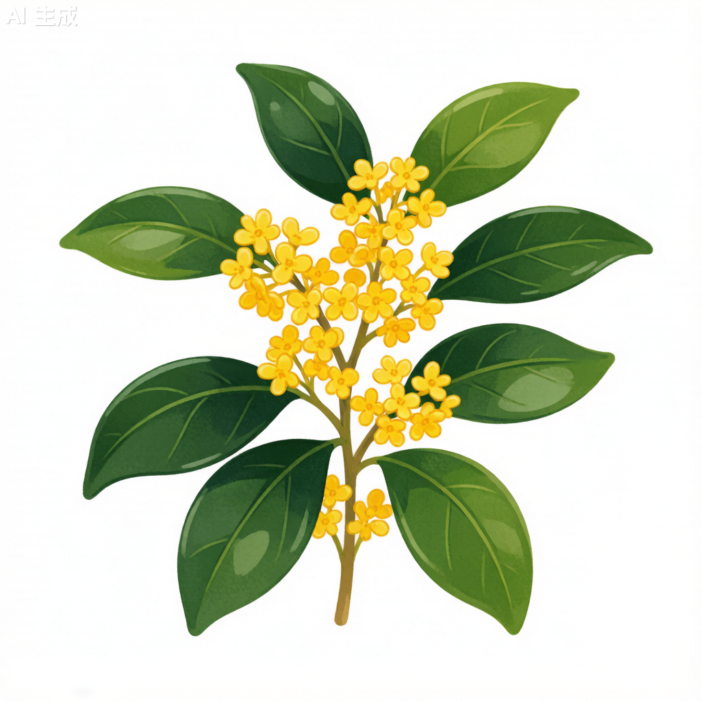

桂花 Osmanthus fragrans

形态特征
桂花（Osmanthus fragrans）为常绿乔木或灌木，高3–10米。树皮灰褐色。叶片革质，椭圆形、长椭圆形或椭圆状披针形，长7–14.5厘米，宽2.6–4.5厘米，先端渐尖，基部楔形，全缘或上半部疏生细锯齿。叶面深绿色，有光泽，背面淡绿色。聚伞花序簇生于叶腋，每腋内有花多朵；花极芳香；花冠黄白色、淡黄色、黄色或橘红色，裂片4；雄蕊2。核果歪斜，椭圆形，长1–1.5厘米，紫黑色。花期9–10月上旬，果期翌年3月。桂花根据花色和花期分为四大品种群：金桂（金黄色）、银桂（黄白色）、丹桂（橙红色）和四季桂（多次开花）。
分布与生境
桂花原产中国西南部，现长江流域及以南各省广泛栽培。喜温暖湿润气候，最适年均温15–25℃，月均温不低于0℃。喜光，但也耐半阴。对土壤要求不严，在酸性、中性和微碱性土壤中均能生长，但以排水良好、富含腐殖质的微酸性砂壤土最为适宜。耐寒性中等，在-10℃以下低温时需防寒。
分类学
桂花为木犀科（Oleaceae）木犀属（Osmanthus）植物。种加词"fragrans"意为"芳香的"，精准描述了桂花最突出的特征——浓郁的花香。木犀属约有30种，分布于亚洲和北美洲的亚热带地区。桂花是中国十大传统名花之一，分为金桂、银桂、丹桂和四季桂四大品种群。《中国植物志》将其归为单一物种下的不同栽培品种。
生态习性
桂花性喜温暖湿润，大树喜光，幼树耐阴。对空气湿度要求较高，适宜在空气相对湿度70%以上的环境中生长。耐旱性中等，不耐积水。生长速度中等偏慢，但寿命极长，可达千年以上。桂花是秋季开花的经典树种，其"花不见树、香飘十里"的开花方式极具特色——花细小而不显眼，但香气极为浓郁。桂花的花香主要成分为γ-癸内酯、β-紫罗兰酮等挥发性化合物。桂花树冠圆润饱满，四季常青。
利用与文化
桂花是中国十大传统名花之一，有着2,500年以上的栽培历史。"桂"与"贵"谐音，寓意富贵吉祥。古人以"折桂"比喻科举及第。桂花可提取香精，用于食品、化妆品及香料工业。桂花制品种类繁多，包括桂花茶、桂花糕、桂花糖、桂花蜜等。合肥市将桂花选为市花。桂花也是中药材，有散寒破结、化痰止咳的功效。木材材质细密，纹理美观，是雕刻和工艺品的优质用材。桂花还是重要的蜜源植物，桂花蜜品质优良。
参考文献
- 《中国植物志》第61卷: 107页. 科学出版社.
- 刘玉莲等. 2001. 桂花品种分类研究. 园艺学报.
- 杨康民. 2004. 桂花栽培与利用. 中国林业出版社.